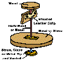

|
The Odd Spot
[2] 
Some links open in a
new window.
Oddspots [1]
Oddspots [3]
 In
the 1840s, the king of Sardinia wanted to replace some missing
pieces from a very old set of Chinese porcelain, and requested
the Herend Porcelain Manufactory, under the directorship of
Mor Fischer, to make them. Fischer personally delivered the
china to Turin castle and asked permission to arrange the
collection for inspection in private. This granted, he then
swapped the originals from their cabinet with his replacement
pieces on the display table. On their arrival, the king and
his courtiers criticized the 'copies' as being of inferior
quality. However, to their embarrassment, they were criticizing
their own originals! From that day on, Herend's reputation
as a quality porcelain manufacturer was ensured. In
the 1840s, the king of Sardinia wanted to replace some missing
pieces from a very old set of Chinese porcelain, and requested
the Herend Porcelain Manufactory, under the directorship of
Mor Fischer, to make them. Fischer personally delivered the
china to Turin castle and asked permission to arrange the
collection for inspection in private. This granted, he then
swapped the originals from their cabinet with his replacement
pieces on the display table. On their arrival, the king and
his courtiers criticized the 'copies' as being of inferior
quality. However, to their embarrassment, they were criticizing
their own originals! From that day on, Herend's reputation
as a quality porcelain manufacturer was ensured.
Find out
more |
 Eighty
percent of the moon seems to be composed of a light colored
feldspar. At one time the entire surface of the moon was probably
molten. As it cooled, the lighter minerals, like feldspar,
floated to the top, while the heavier ones, like basalt, stayed
below the surface. Eighty
percent of the moon seems to be composed of a light colored
feldspar. At one time the entire surface of the moon was probably
molten. As it cooled, the lighter minerals, like feldspar,
floated to the top, while the heavier ones, like basalt, stayed
below the surface.
Find
out more |
 The
word 'Kiln' is derived from the Latin word culina, meaning
kitchen or cook stove. Culina was introduced to England by
the Romans in the first and second centuries A.D., managed
to survive the Anglo-Saxon invasion of the fifth and sixth
centuries, and showed up in the Old English forms cylene or
cyline, meaning large oven. Culina has retained this specialized
meaning ever since, and nowhere is it used to denote kitchen.
Its cousin, culinary, is of much more recent origin. Its first
written appearance was in 1638, and its closeness to the classical
Latin form indicates that it was reintroduced to English by
sixteenth century humanists. The
word 'Kiln' is derived from the Latin word culina, meaning
kitchen or cook stove. Culina was introduced to England by
the Romans in the first and second centuries A.D., managed
to survive the Anglo-Saxon invasion of the fifth and sixth
centuries, and showed up in the Old English forms cylene or
cyline, meaning large oven. Culina has retained this specialized
meaning ever since, and nowhere is it used to denote kitchen.
Its cousin, culinary, is of much more recent origin. Its first
written appearance was in 1638, and its closeness to the classical
Latin form indicates that it was reintroduced to English by
sixteenth century humanists.
Find out more |
In
2000 the Finnish ceramist, designer and teacher Kyllikki Salmenhaara
(1915-1981) was honored with a 3.50 markka stamp . She is
credited with having modernized the curriculum for ceramic
art in Finland and was also known for her extensive research
on clays and glazes.
Find
out more |
 The
English name for a type of salt-glazed stoneware vessel displaying
a molded, bearded face on the neck and often a coat of arms
below that is 'Bellarmine'. In England it was thought the
face represented Cardinal Bellarmino, who was strongly opposed
to the Protestant church, thus the name. The style originated
in Germany, probably between 1520 and 1540, where they were
called ‘Bartmannskrüge’. Another English
name was ‘graybeards’. The
English name for a type of salt-glazed stoneware vessel displaying
a molded, bearded face on the neck and often a coat of arms
below that is 'Bellarmine'. In England it was thought the
face represented Cardinal Bellarmino, who was strongly opposed
to the Protestant church, thus the name. The style originated
in Germany, probably between 1520 and 1540, where they were
called ‘Bartmannskrüge’. Another English
name was ‘graybeards’.
Find
out more |
A
Russian proverb says "A jug that has been mended lasts
two hundred years."
Source: Famous
Quotations |
 Margo, a farmer of ancient Carthage (814 - 146 BC) recommended
to preserve fruit by covering it in fresh potter's clay. After
the clay dried it would be hung up in a cool place. When the
fruit was to be eaten, it would be steeped in water, dissolving
the clay - the fruit was as fresh as if it had just been picked.
Margo, a farmer of ancient Carthage (814 - 146 BC) recommended
to preserve fruit by covering it in fresh potter's clay. After
the clay dried it would be hung up in a cool place. When the
fruit was to be eaten, it would be steeped in water, dissolving
the clay - the fruit was as fresh as if it had just been picked. |
 Steve
Irvine is the maker of this working ceramic pinhole camera,
which forms remarkable images on 5 x 8 inch photo paper. The
stopper on the front is the shutter, which is removed and
replaced to make the exposure. Exposure times vary from about
a minute to several hours. Steve
Irvine is the maker of this working ceramic pinhole camera,
which forms remarkable images on 5 x 8 inch photo paper. The
stopper on the front is the shutter, which is removed and
replaced to make the exposure. Exposure times vary from about
a minute to several hours.
Find
out more. |
 Many
believe that the name of the famed Parisian garden Jardins
des Tuileries is derived from its equally famous tulips. However,
the site was once a clay pit, from where terracotta was mined
for roof tiles, or 'tuiles'. Many
believe that the name of the famed Parisian garden Jardins
des Tuileries is derived from its equally famous tulips. However,
the site was once a clay pit, from where terracotta was mined
for roof tiles, or 'tuiles'.
Source: Dan Brown, The Da Vinci Code |
 If
you think you know what a 'non-functional' pot is, check out
Patrick Dougherty's 'Greenware' installation. Created at the
New York State College of Ceramics in 1999, the sculpture
explored the classic 'pot' form, but was made entirely from
twigs and saplings. If
you think you know what a 'non-functional' pot is, check out
Patrick Dougherty's 'Greenware' installation. Created at the
New York State College of Ceramics in 1999, the sculpture
explored the classic 'pot' form, but was made entirely from
twigs and saplings.
Find
out more |
 The
term 'neriage' is used to describe ceramic laminating techniques.
It is often thought of as being French, but is in fact Japanese,
and should be pronounced 'neddi-ahgay'. The
term 'neriage' is used to describe ceramic laminating techniques.
It is often thought of as being French, but is in fact Japanese,
and should be pronounced 'neddi-ahgay'.
Source: Clayart Listserv |
 Because
of his German origins, 20th century potter Hans Coper was
arrested in Britain soon after the outbreak of World War II.
Despite being sent to Canada, he returned to Britain and even
served in the British army. He was eventually naturalized
in 1958 and went on to become one of Britain's most eminent
potters. Because
of his German origins, 20th century potter Hans Coper was
arrested in Britain soon after the outbreak of World War II.
Despite being sent to Canada, he returned to Britain and even
served in the British army. He was eventually naturalized
in 1958 and went on to become one of Britain's most eminent
potters.
Find
out more |
 Takako
Araki's sculpture Bible in the Sand of 1979
is actually made of sand and clay. It is currently on display
at an exhibition of contemporary ceramics in Chennai, India. Takako
Araki's sculpture Bible in the Sand of 1979
is actually made of sand and clay. It is currently on display
at an exhibition of contemporary ceramics in Chennai, India.
Source: AP |
 Australian
'claymation' animator Adam Elliot's short film Harvie
Krumpet has unexpectedly won the award for best
animated short film at the 2004 Oscars. Only a few weeks ago,
Elliot was on welfare. Harvey Krumpet won ahead of
submissions by Walt Disney and Pixar Films. Australian
'claymation' animator Adam Elliot's short film Harvie
Krumpet has unexpectedly won the award for best
animated short film at the 2004 Oscars. Only a few weeks ago,
Elliot was on welfare. Harvey Krumpet won ahead of
submissions by Walt Disney and Pixar Films.
Find
out more
|
 In
his tongue-in-cheek 'Delft Disasterware', American artist
Charles Krafft renders firearms and war ordinance, such as
AK-47 rifles, Smith & Wesson Revolvers and hand grenades
in Delft Blue and White style porcelain. In
his tongue-in-cheek 'Delft Disasterware', American artist
Charles Krafft renders firearms and war ordinance, such as
AK-47 rifles, Smith & Wesson Revolvers and hand grenades
in Delft Blue and White style porcelain.
Find
Out More |
 In
1739, 1743 & 1751 Giovanni Battista Passeri published
Sumptibus Academiae Pisaurensis, a three volume reference
work on his extensive collection of ancient Roman terracotta
lamps. Unfortunately most of the objects he collected were
fake, making his the largest collection of fake ceramics ever
collected! In
1739, 1743 & 1751 Giovanni Battista Passeri published
Sumptibus Academiae Pisaurensis, a three volume reference
work on his extensive collection of ancient Roman terracotta
lamps. Unfortunately most of the objects he collected were
fake, making his the largest collection of fake ceramics ever
collected!
Find
Out More |
 Men's
urinals at Schipol airport in Amsterdam, The Netherlands,
feature a decal of a fly in a prominent spot. The fly decal
is said to improve the aim of the person relieving himself,
thus helping to reduce cleaning costs. Apparently Victorian
urinals in Britain also featured 'targets' for much the same
purpose. Men's
urinals at Schipol airport in Amsterdam, The Netherlands,
feature a decal of a fly in a prominent spot. The fly decal
is said to improve the aim of the person relieving himself,
thus helping to reduce cleaning costs. Apparently Victorian
urinals in Britain also featured 'targets' for much the same
purpose.
Find
Out More |
 In
the mid 1700s the Russian potter Dmitry Vinogradov of the
Imperial Porcelain Factory is said to have discovered the
secret of manufacturing porcelain independently of potters
in the West, using a white clay from Gzhel. However porcelain
was not manufactured in the area until the early 19th century,
beginning with the potter Pavel Kulichkov, who had learnt
its secrets at the Gardner Factory. Today, Gzhel is known
for its blue and white porcelain pottery and figurines. In
the mid 1700s the Russian potter Dmitry Vinogradov of the
Imperial Porcelain Factory is said to have discovered the
secret of manufacturing porcelain independently of potters
in the West, using a white clay from Gzhel. However porcelain
was not manufactured in the area until the early 19th century,
beginning with the potter Pavel Kulichkov, who had learnt
its secrets at the Gardner Factory. Today, Gzhel is known
for its blue and white porcelain pottery and figurines.
Find
Out More |
 "Picassoettes"
was a term Bernard Leach gave to Picasso-inspired developments
in British ceramics in the 1950s, singling out low-fired sculpture
and colorful tin-glazed pottery by Margaret Hine, William
Newland and Nicholas Vergette. William Newland: "We had
an exhibition at Goldsmith's and Terence Mullaly did a nice
illustrated article on it, I've got a copy of it somewhere,
and there's a Mexican figure at the top, there's my bull,
photographed and reproduced, there's a Margaret Hine pigeon,
and right down at the bottom you've got Bernard Leach painting
a little pot, and Leach saw this, oh there's a big Picasso
in it as well, but Leach saw this and called us all the Picassoettes.
I don't know if he, you know, whether it was to deride us
or be funny or what the hell, but it is true, one was fantastically
Picassoesque". "Picassoettes"
was a term Bernard Leach gave to Picasso-inspired developments
in British ceramics in the 1950s, singling out low-fired sculpture
and colorful tin-glazed pottery by Margaret Hine, William
Newland and Nicholas Vergette. William Newland: "We had
an exhibition at Goldsmith's and Terence Mullaly did a nice
illustrated article on it, I've got a copy of it somewhere,
and there's a Mexican figure at the top, there's my bull,
photographed and reproduced, there's a Margaret Hine pigeon,
and right down at the bottom you've got Bernard Leach painting
a little pot, and Leach saw this, oh there's a big Picasso
in it as well, but Leach saw this and called us all the Picassoettes.
I don't know if he, you know, whether it was to deride us
or be funny or what the hell, but it is true, one was fantastically
Picassoesque". |
 There
are four Tozan kilns in the world today, all built with the
help of Japanese potter Yukio Yamamoto, who was instrumental
in the revival of interest in Tozan ware. There is one in
Japan, one in the USA and two in Canada. The original Tozan
kiln was built in 1722, producing pottery for the Feudal Lord
of Himeji. It was in use until 1860. It is characterized by
a greater length and additional firing chambers than the usual
anagama kiln. There
are four Tozan kilns in the world today, all built with the
help of Japanese potter Yukio Yamamoto, who was instrumental
in the revival of interest in Tozan ware. There is one in
Japan, one in the USA and two in Canada. The original Tozan
kiln was built in 1722, producing pottery for the Feudal Lord
of Himeji. It was in use until 1860. It is characterized by
a greater length and additional firing chambers than the usual
anagama kiln.
Find
Out More |
 Space
exploration, e.g. NASA’s current Mars Rover mission,
could barely function without ceramic components. They are
used as heat resistant shields, in motors, jet propulsion
systems and even computer components. Space
exploration, e.g. NASA’s current Mars Rover mission,
could barely function without ceramic components. They are
used as heat resistant shields, in motors, jet propulsion
systems and even computer components.
Find
Out More
|
 The
most common type of kiln used by the early settlers in the
southern states of the USA was called a groundhog kiln. It's
origins can be traced back to German and English kilns. This
was a uniquely southern kiln type of the 19th century, which
was used to fire alkaline-glazed pottery. It was partially
embedded in the ground and featured a doorway leading into
a long, low passage of brick or rock construction. The chimney
poked out of the ground, further up the hill. The
most common type of kiln used by the early settlers in the
southern states of the USA was called a groundhog kiln. It's
origins can be traced back to German and English kilns. This
was a uniquely southern kiln type of the 19th century, which
was used to fire alkaline-glazed pottery. It was partially
embedded in the ground and featured a doorway leading into
a long, low passage of brick or rock construction. The chimney
poked out of the ground, further up the hill.
Find
Out More
|
|  The
'harvest jug' was a ring-shaped bottle used by farmers working
in the fields. The shape enabled them to carry the bottle
on their arm. It first made an appearance as Italian maiolica
in the early 16th century. The
'harvest jug' was a ring-shaped bottle used by farmers working
in the fields. The shape enabled them to carry the bottle
on their arm. It first made an appearance as Italian maiolica
in the early 16th century.
Source: Savage & Newman, An Illustrated
Dictionary of Ceramics
|
| While
in the West, the potter's wheel turns anti-clockwise, in the
East, it traditionally rotates clockwise.
Find out more |
 The
world's largest ceramic tower measures 4.1 meters (13 1/2
feet). It was built in Seto park in honor of the legendary
13th C. Kyoto potter Toshiro, aka Kato Shirozaemon Kagemasa. The
world's largest ceramic tower measures 4.1 meters (13 1/2
feet). It was built in Seto park in honor of the legendary
13th C. Kyoto potter Toshiro, aka Kato Shirozaemon Kagemasa.
Find
out more |
 The
National Museum of Iraq has an earthenware jar that could
be the world's oldest battery - made nearly 2,000 years before
Volta invented the modern battery in 1800. The
National Museum of Iraq has an earthenware jar that could
be the world's oldest battery - made nearly 2,000 years before
Volta invented the modern battery in 1800.
Find
out more
|
 Californian
potter Andrea Fábrega creates one-of-a-kind, wheel-thrown
miniature porcelain pieces smaller than 1.5 inches. Her vases,
teapots and other vessels are fully functional and finished
with various decorating and firing techniques. In 1992 her
work won the California State Fair Award of Excellence. Californian
potter Andrea Fábrega creates one-of-a-kind, wheel-thrown
miniature porcelain pieces smaller than 1.5 inches. Her vases,
teapots and other vessels are fully functional and finished
with various decorating and firing techniques. In 1992 her
work won the California State Fair Award of Excellence.
Find
out more
|
 In
the 19th & 20th centuries, the people of the towns of
Staffordshire were so cynical about pollution from the potteries,
there was a postcard saying "The change of air soots
me well at Stoke-on-Trent". In
the 19th & 20th centuries, the people of the towns of
Staffordshire were so cynical about pollution from the potteries,
there was a postcard saying "The change of air soots
me well at Stoke-on-Trent".
Find
out more
|
The
S.S. Ceramic was a British passenger liner that ploughed the
seas between 1913 - 1942. In 1942 it was sunk west of the
Azores by the German U-boat U-515 while en route from England
to Australia.
Find
out more
|
 Catalytic converters convert harmful car exhaust fumes into
less harmful compounds. The catalyst is coated onto a ceramic
honeycomb that is housed in a muffler attached to the car's
exhaust.
Catalytic converters convert harmful car exhaust fumes into
less harmful compounds. The catalyst is coated onto a ceramic
honeycomb that is housed in a muffler attached to the car's
exhaust.
Find
out more
|
 Legend has it that the 18th century Staffordshire potter John
Astbury masqueraded as a 'simpleton', in order to learn the
secrets of the trade from the Dutch potter emigrant brothers
John and David Elers.
Legend has it that the 18th century Staffordshire potter John
Astbury masqueraded as a 'simpleton', in order to learn the
secrets of the trade from the Dutch potter emigrant brothers
John and David Elers.
Find
out more
|
 The
Dutch city of Gouda is not only known for its cheese - it
also hosts an annual international potter's festival and competition.
Amongst the events is the 'throwing the tallest vase' competition.
Potters get five kilos of clay and six minutes to throw a
tall jar. Heike Rabe from Rotterdam has won the last couple
of years with vases between 95 and 100 cm height. The
Dutch city of Gouda is not only known for its cheese - it
also hosts an annual international potter's festival and competition.
Amongst the events is the 'throwing the tallest vase' competition.
Potters get five kilos of clay and six minutes to throw a
tall jar. Heike Rabe from Rotterdam has won the last couple
of years with vases between 95 and 100 cm height.
Find
out more |
 The
traditional potters of Thimi, Nepal share the same last name,
Prajapati. This simply means 'potter' in the local Newari
language. Thus Hari Prajapati (pictured), translates as 'Hari
Potter'. The
traditional potters of Thimi, Nepal share the same last name,
Prajapati. This simply means 'potter' in the local Newari
language. Thus Hari Prajapati (pictured), translates as 'Hari
Potter'.
Find out more |
 Jeff
Nebeker, who is both an accomplished ceramist and pastry chef,
uses pastry tools to make life-like clay 'food' sculpture
in the tradition of San Francisco Bay Area funk ceramics.
HB Jeff
Nebeker, who is both an accomplished ceramist and pastry chef,
uses pastry tools to make life-like clay 'food' sculpture
in the tradition of San Francisco Bay Area funk ceramics.
HB
Find
out more |
 The
German Society for Clay-Pipe Research is is a free
association of archaeologists, folklore specialists, art historians,
researchers keen on cultural and local heritage, pipe collectors
and everyone who takes an interest in the clay pipe and the
story of smoking as an object of cultural study. The society's
magazine
KnasterKOPF is the only German-speaking archaeological
periodical to specialize on this branch of modern archaeology.
HB The
German Society for Clay-Pipe Research is is a free
association of archaeologists, folklore specialists, art historians,
researchers keen on cultural and local heritage, pipe collectors
and everyone who takes an interest in the clay pipe and the
story of smoking as an object of cultural study. The society's
magazine
KnasterKOPF is the only German-speaking archaeological
periodical to specialize on this branch of modern archaeology.
HB
Find out more
|
 The
2001 Hong Kong exhibition Huzhi! showcased a rather unusual
aspect of ceramics - the contemporary chamber pot. Pictured
is a pot by King Qing of China. Other artists came from Japan,
the USA, Canada, The Netherlands and Sweden. HB The
2001 Hong Kong exhibition Huzhi! showcased a rather unusual
aspect of ceramics - the contemporary chamber pot. Pictured
is a pot by King Qing of China. Other artists came from Japan,
the USA, Canada, The Netherlands and Sweden. HB
Find
out more |
 The
Bourry Box was designed by French ceramic industrialist Emile
Bourry and first described in his book "Traite des Industries
Ceramiques" in 1897. An English translation 'A Treatise
of Ceramic Industries: A Complete Manual for Pottery, Tile
and Brick Manufacturers' was available from 1901. In a Bourry
Box kiln, the flames are pulled down by the kiln draft, so
the fire burns 'upside down'. The
Bourry Box was designed by French ceramic industrialist Emile
Bourry and first described in his book "Traite des Industries
Ceramiques" in 1897. An English translation 'A Treatise
of Ceramic Industries: A Complete Manual for Pottery, Tile
and Brick Manufacturers' was available from 1901. In a Bourry
Box kiln, the flames are pulled down by the kiln draft, so
the fire burns 'upside down'.
Find
out more |
The
ancient Greeks revered their Olympic heroes as we do today.
Such was their fame, that many scenes from the Games found
their way onto Greek pottery.
Read
more about the Ancient Olympics |
Henry
Wadsworth Longfellow (1807–1882), KERAMOS (1878).
Turn, turn, my wheel! Turn round and round
Without a pause, without a sound:
So spins the flying world away!
This clay, well mixed with marl and sand,
Follows the motion of my hand;
For some must follow, and some command,
Though all are made of clay!
Read more |
 Kakiemon
ceramics were honored with this Japanese phone card. The first
Kakiemon (1596-1666), the originator of Kakiemon porcelain,
succeeded to produce polychrome overglazing porcelain, known
as 'Akae' for the first time in Japan around 1643. Kakiemon
is very different from other types of porcelain because of
its warm milk-white foundation called 'Nigoshide'. Kakiemon
is still highly valued and was designated an important intangible
cultural treasure in 1971. Kakiemon
ceramics were honored with this Japanese phone card. The first
Kakiemon (1596-1666), the originator of Kakiemon porcelain,
succeeded to produce polychrome overglazing porcelain, known
as 'Akae' for the first time in Japan around 1643. Kakiemon
is very different from other types of porcelain because of
its warm milk-white foundation called 'Nigoshide'. Kakiemon
is still highly valued and was designated an important intangible
cultural treasure in 1971.
Find
out more |
And yet more Oddspots...
|